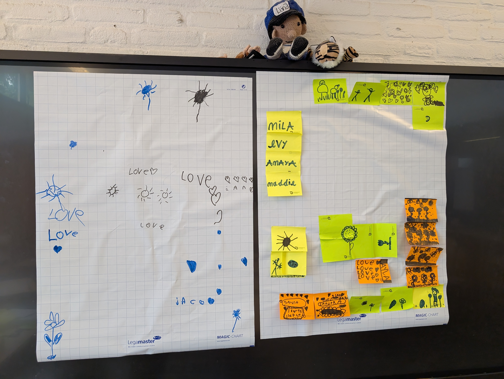

DRAFT Scrum 4 Kids Workshop: One Minute Art¶
Workshop that will allow participants of all levels to experience Scrum by drawing with a large group.

Details¶
- Goal: Teach foundational Scrum at scale
- Duration: 20-50 minutes
- Number of Participants: 8-50
- Space arrangement: small groups of 4-6 people (preferably with chairs and tables, but anything that will allow participants to draw on stickies will work)
- Materials needed:
- (Colored) Stickies - to draw on
- (Colored) Markers - to draw with
- Multiple sheets of large paper (Brown paper, flip over etc.) - to collect everyone's work every round
- Masking tape - to stick the large paper to the wall
Steps¶
Preparation¶
- Hang a large paper on the wall
- Optional: Distribute drawing materials
Note
If you have multi-color drawing materials, you can enhance the learning experience by creating scarcity of colors. Placing all materials in a central place will enable participants to pratice intra-group communication. Placing one color on each table will enable participants to practice inter-group communication.

Round 1: Challenge - Making a beautiful drawing¶
In this round participants are invited to experience a common challenge together: working together effectively in large groups.

- Have participants form small groups.
- Explain that we will be creating a beautiful drawing together on the one large piece of paper. Make sure you're extra vague on the intended result, and how we expect to get there.
- Invite participants to each take a marker and contribute to the drawing. Some participants may need some encouragement, and some may skip in this round. That is to be expected and perfectly OK. Try to encourage participants to contribute, but accept their trepidation.
- After about 1 minute, instruct participants to stop drawing, and return to their groups. It's important that participants have enough time to experience the challenge, but not nearly enough to actually contribute. You'll know it's time to stop when participants are getting a bit frustrated.
- Debrief: Lightheartedly ask participants if they think the end-result is "beautiful". Next ask what the experience was like for them and what behavior they observed.
Note
Use a Liberating Structure like 1-2-4-all if you have a very diverse audience.

Round 2: Concept - Goal, Rules and Steps¶
In this round participants will be invited to explore:
- A common goal - What is it we're all trying to achieve together, how will we know we've reached it?
- A Minimal set of rules - What rules do we NEED to be able to progress towards that goal
- A single step toward that goal - the smallest possible step we could take in achieving the common goal

Round 3: Exercise - Reaching your goal, finding out how along the way¶
In this round participants are invited to identify a step towards their common goal, and attempt to reach it within 1 minute. Then we'll reflect on progress towards our common goal, and the way we're operating to achieve it. This round can be repeated as many times as you have time for. The goal here is to practice:
- Setting (intermediate) goals
- Working together in a timebox
- Reflecting on progress towards goals and adapting subsequent goals and work agreements iteratively
- Bonus(?): Removing goals and/or agreements when they don't work out

Round 4: Connect - How do you make a beautiful drawing?¶
In this round we'll guide participants through connecting their takeaways to the original challenge: working together effectively. With a focus on making them actionable.